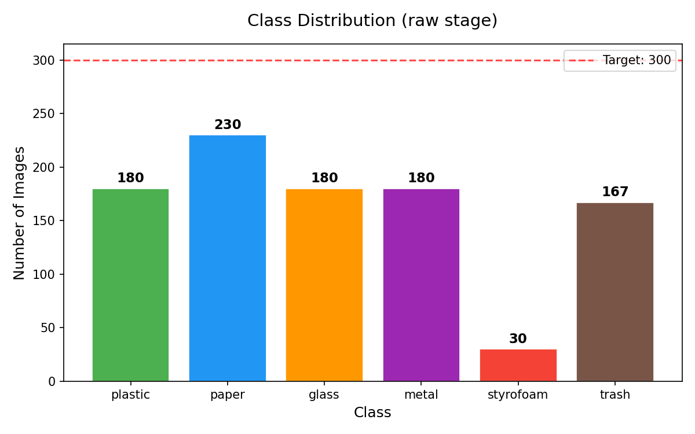
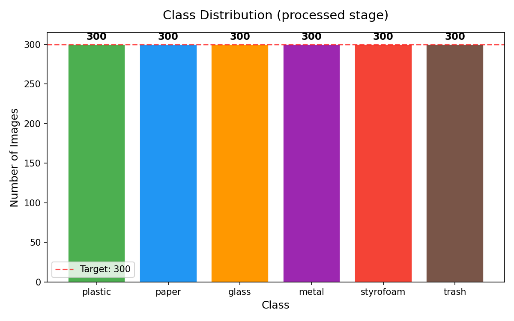
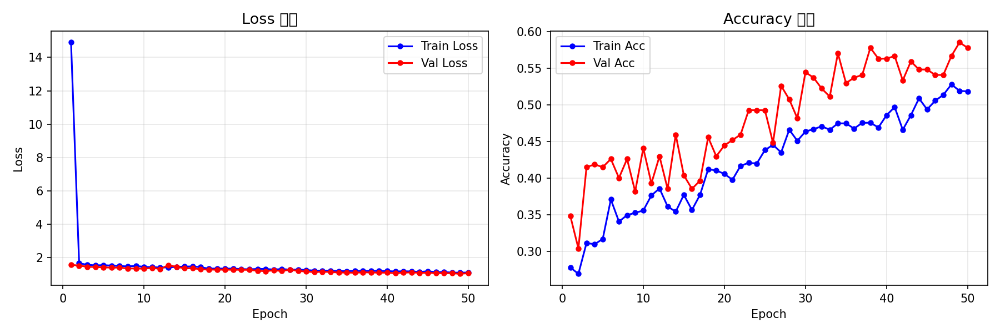
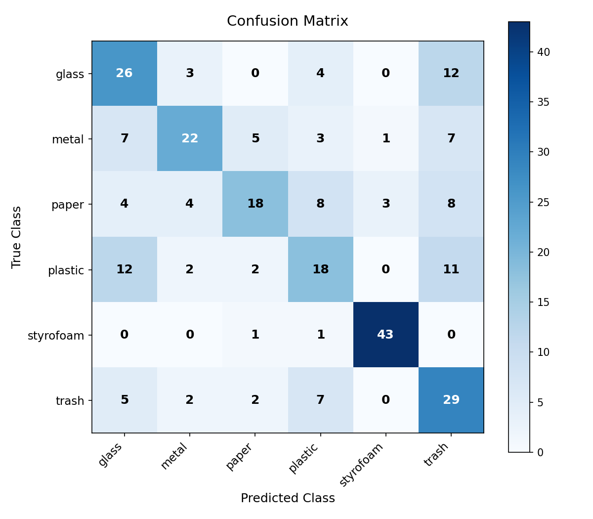
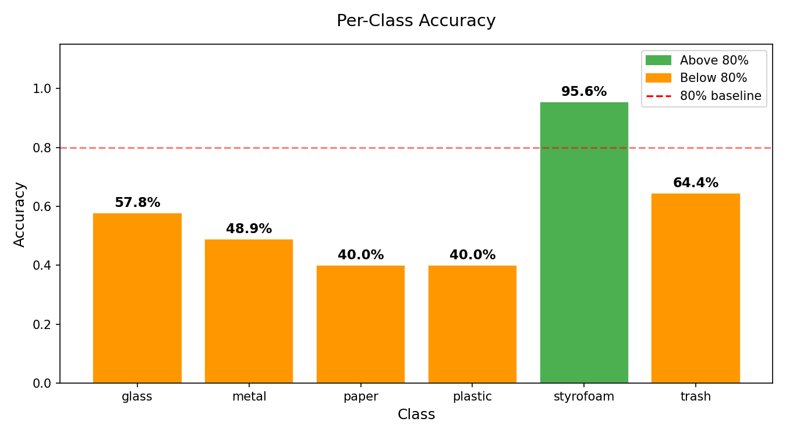
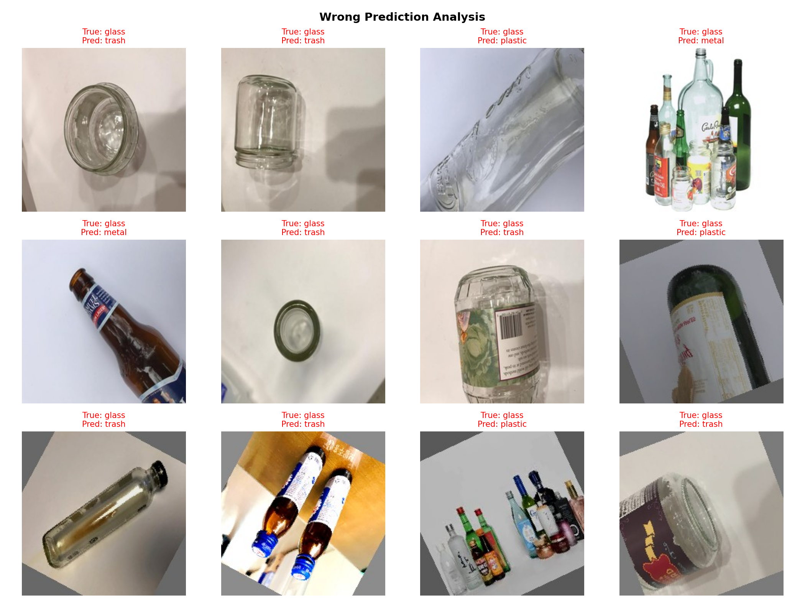

EF1003 · Term Project 1
Recycling. Reimagined.
A convolutional neural network that turns the everyday act of disposal into a moment of intelligence.
The problem
Korea reports strong recycling figures, but the real rate falls short — largely because sorting is hard. We wanted to make it effortless.
Given a photo of a waste item, classify it into one of six categories — plastic, paper, glass, metal, styrofoam, or trash.
The approach
We built it end to end — from camera lens to convolutional kernel.
1,057 raw images, sourced three ways. Augmentation balanced the set to 300 per class — 1,800 in total.

Right after collection — clearly imbalanced.

After augmentation — uniformly balanced.
No pretrained weights. Three convolutional blocks, fully connected layers, a touch of dropout — a clean CNN built from scratch.
50 epochs. Adam at 0.001. Cross-entropy. Batch size 32.
The outcome
The model reached 58% validation accuracy. The interesting story is in which classes it nailed — and which it confused.

Loss and accuracy over 50 epochs — convergence with mild overfitting.
| Class | Accuracy | Notes |
|---|---|---|
| Styrofoam | 95.6% | Distinct white color and texture made it easy. |
| Metal | ~70% | Clear metallic shine helped. |
| Trash | ~60% | Visually varied — harder to learn. |
| Glass | ~50% | Often confused with plastic. |
| Paper | ~40% | Overlaps with cardboard. |
| Plastic | ~40% | Transparent items look like glass. |

Plastic ↔ Glass: the most frequent confusion.

Per-class accuracy — wide variance across categories.

Misclassified samples — almost all share transparency or similar form factor.
What we learned
The model works. The lessons go beyond the metrics.
Smart recycling bins at public stations could classify waste at the moment of disposal, giving instant feedback on incorrect sorting. A consumer app could teach better habits at home.
Credits
This project was carried out as part of the EF1003 Data Literacy Foundation course at KENTECH. We thank Prof. Ukcheol Shin for his lectures and feedback throughout the project.